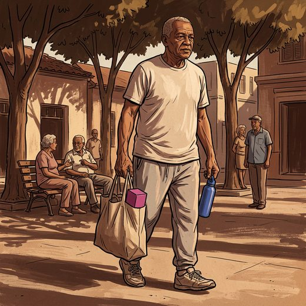

Consulta rápida à beira do leito
Condutas, doses e interações.
Referências da aula · 5
- Izquierdo M, Merchant RA, Morley JE, Anker SD, Aprahamian I, Arai H, et al. International exercise recommendations in older adults (ICFSR): expert consensus guidelines. J Nutr Health Aging. 2021;25(7):824-53. PMID 34409961. doi:10.1007/s12603-021-1665-8.PubMedDOI
- Bull FC, Al-Ansari SS, Biddle S, Borodulin K, Buman MP, Cardon G, et al. World Health Organization 2020 guidelines on physical activity and sedentary behaviour. Br J Sports Med. 2020;54(24):1451-62. PMID 33239350. doi:10.1136/bjsports-2020-102955.PubMedDOI
- Li HR, Huang S, Yv Z, Jiang N, Li P, Zhai Y, et al. Optimal dose of resistance training to improve handgrip strength in older adults with sarcopenia: a systematic review and Bayesian model-based network meta-analysis. Front Physiol. 2025;16:1564988. PMID 40671711. doi:10.3389/fphys.2025.1564988.PubMedDOI
- Cruz-Jentoft AJ, Bahat G, Bauer J, Boirie Y, Bruyère O, Cederholm T, et al. Sarcopenia: revised European consensus on definition and diagnosis. Age Ageing. 2019;48(1):16-31. PMID 30312372. doi:10.1093/ageing/afy169.PubMedDOI
- Bauer J, Biolo G, Cederholm T, Cesari M, Cruz-Jentoft AJ, Morley JE, et al. Evidence-based recommendations for optimal dietary protein intake in older people: a position paper from the PROT-AGE Study Group. J Am Med Dir Assoc. 2013;14(8):542-59. PMID 23867520. doi:10.1016/j.jamda.2013.05.021.PubMedDOI